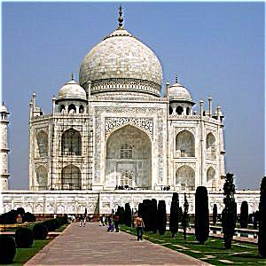
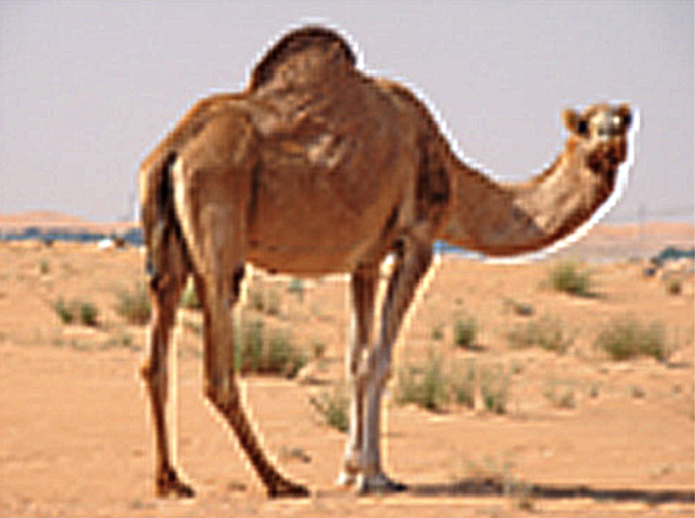

Finite Difference Operator
For each partial derivative, a Numpy array was established as a finite difference kernel: dx_kernel = np.array([[1, -1]]) for the x-direction and dy_kernel = np.array([[1], [-1]]) for the y-direction. These kernels were then used to convolve with the original image via scipy.signal.convolve2d, setting the mode to 'same', to generate images of the corresponding partial derivatives. The gradient's magnitude at each pixel was calculated using np.sqrt(dx_deriv ** 2 + dy_deriv ** 2), which involves treating the pixel values from both derivative images as components of a gradient vector and computing its L2 norm to determine the final pixel value in the edge image.
Derivative of Gaussian (DoG) Filter (First Approach)
Compared to the previous part, these images are smoother and have less noise. The edges are also cleaner and thicker, even with a much lower threshold.
Derivative of Gaussian (DoG) Filter (Second Approach)
Left: dogx, Right: dogy
These images are the same as ones above.
Image "Sharpening"
alpha = 2, 4, 8


original -> sharpened


original -> sharpened
original -> sharpened
original -> sharpened
blured sharpen -> sharpened blured sharpened
The blurred and then sharpened image appears noisier and contains more artifacts compared to the original, with more pronounced edges. Additionally, many of the fine details from the original image are lost or appear blurrier in the sharpened version.
Hybrid Images
Bells and Whistles: I enhanced the quality of the hybrid image through color manipulation. I experimented with using the color from both images, just the high-frequency image, and only the low-frequency image. The outcomes for the initial hybrid image set, featuring Derek and Nutmeg, are displayed below. Overall, incorporating colors from both images appears to yield the most satisfactory results, hence all the hybrid images presented above were created using this approach.
left: im1 fft, middle: hybrid_fft, right: im2 fft
left: low frequency, right: high frequency
Successful. left: low frequency, middle: high frequency, right: hybrid
Successful. left: low frequency, middle: high frequency, right: hybrid
Failure. I think it failed mainly because of the choisen of the image. Because the two images are just so differnet in terms of geometric shape and there're not a lot of overlaps between them, which makes them very easy to distinguish.
Gaussian and Laplacian Stacks
apple gaussian stack
apple lapacian stack
orange gaussian stack
orange lapacian stack
masked apple lapacian stack
masked orange lapacian stack
mask + oraple
berkeley gaussian stack
berkeley lapacian stack
stanford gaussian stack
stanford lapacian stack
stanford tower mask + berkford
John Mayer is my favorite artist. I hope his head can grow on my neck, which is why I chose to blend him and I (Harry).
harry gaussian stack
harry lapacian stack
john mayer gaussina stack
john mayer lapacian stack
john mayer mask + harrymayer